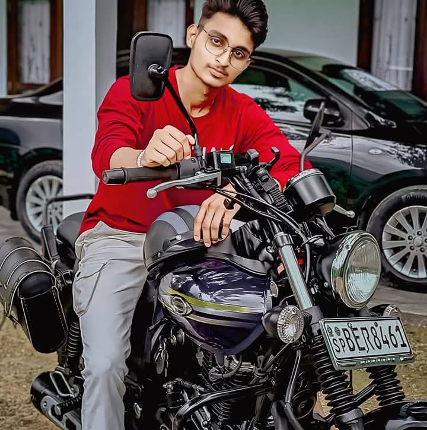
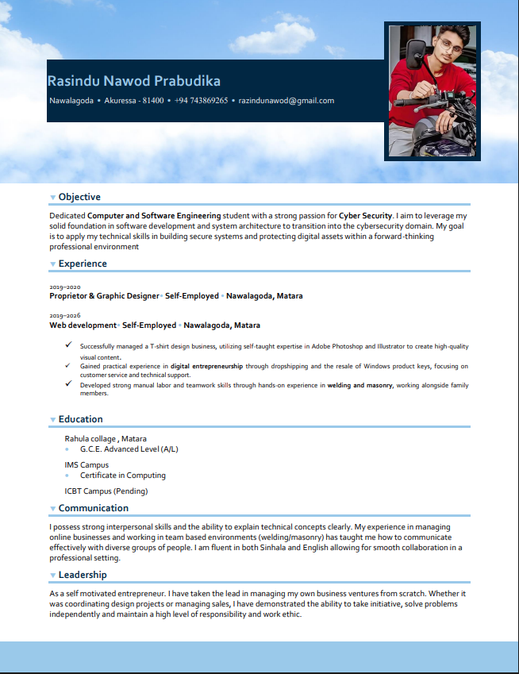

Focus
Cyber Security
I am currently a student pursuing a degree in Computer and Software Engineering at ICBT Southern Campus. I completed my basic education at Rahula College, Matara, and my dream in the tech world is to become a skilled Cyber Security Specialist. My passion for technology and cyber security has driven me to pursue a career in this field.
In addition to software development, I have gained a great deal of knowledge about Adobe Photoshop and Illustrator through self-study, which I use for my side hustles of T-Shirt Design, Logo Design, and Photo Editing.
ICBT Southern Campus (Cardiff Metropolitan University(UK)(Pending))
IMS Campus (Completed)
Rahula College, Matara (Completed)
Cloud Security, Ethical Hacking, Web Development and AI-driven Cyber Defense.
Apart from education, I am also very fond of sports. Cricket is something I especially enjoy. I value teamwork both in the cyber world and on the field of play.
My only hope is to become a leading Cyber Security Specialist in Sri Lanka and contribute my utmost to strengthening the digital security of our country.
